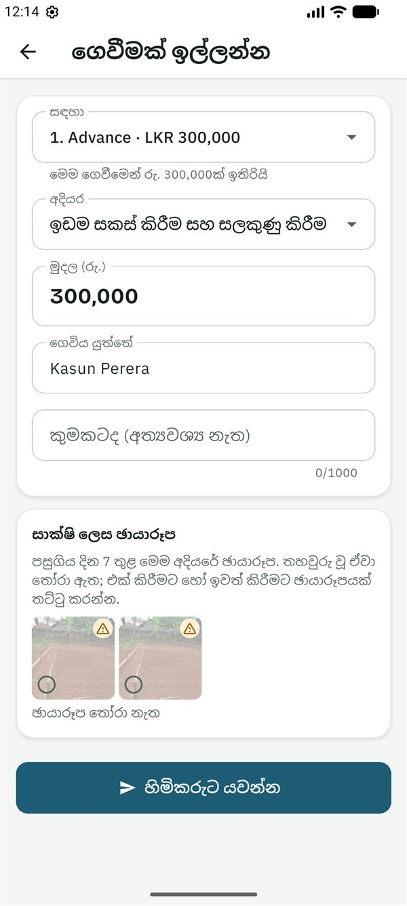
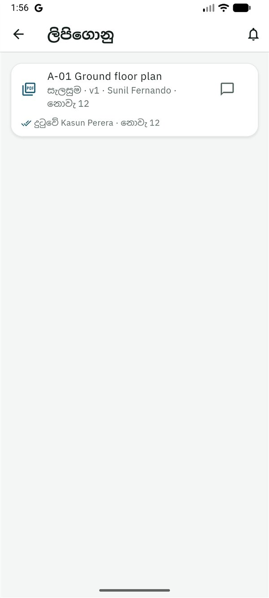

SiteProof
SiteProofමෙම සිංහල පාඨය කෙටුම්පතකි. යෙදුමේ සිංහල මෙන්ම, සිංහල මව් භාෂාව වන කෙනෙකු එය තවම සමාලෝචනය කර නැත.
This Sinhala text is a draft awaiting review by a native speaker, like the app's Sinhala.
මාර්ගෝපදේශ › ස්ථානයේ සිටින පවුලේ සාමාජිකයා
ස්ථානයේ සිටින පවුලේ සාමාජිකයා සඳහා මාර්ගෝපදේශය
Read in English (ඉංග්රීසියෙන් කියවන්න)
මෙම මාර්ගෝපදේශය ස්ථානයේ සිටින පවුලේ සාමාජිකයා සඳහායි: නිවස අසල ජීවත් වන, එහිදී හිමිකරුගේ ඇස් වන දෙමාපියෙක්, සහෝදරයෙක්, සහෝදරියක් හෝ ඥාතියෙක්. ඔබ ඡායාරූප සහ බිල්පත් දමයි, ස්ථානය සලකුණු කරයි, ගෙවීම් ඉල්ලයි. ඔබට අයවැය පෙනේ.
ඔබට කළ හැකි සහ කළ නොහැකි දේ
ඔබට කළ හැකි දේ
- ඡායාරූප සහ හඬ සටහනක් සමඟ යාවත්කාලීන පළ කිරීම.
- නිවස අසල සිටින විට ස්ථානය සලකුණු කිරීම.
- බිල්පත් එක් කිරීම සහ ගෙවීම් ඉල්ලීම.
- බැංකුව හරහා ගෙවූ පසු ගෙවීමක් ගෙව්වා ලෙස සලකුණු කිරීම.
- අයවැය, සියලු බිල්පත්, සියලු ගෙවීම් ඉල්ලීම් සහ ගෙවීම් කාලසටහන බැලීම.
- අදියර ආරම්භ කිරීම සහ අවසන් කිරීම.
- නව සැලසුමක් දුටු බව තහවුරු කිරීම.
- අදියර පරීක්ෂාවකින් සොයාගත් දේ නිවැරදි කිරීම, සහ හිමිකරුගේ තීරණයට වැඩේ වෙනසක් සටහන් කිරීම (Plus).
- යාවත්කාලීන, බිල්පත්, ගෙවීම් සහ සැලසුම් ගැන අදහස් දැක්වීම.
ඔබට කළ නොහැකි දේ
- ගෙවීමක් අනුමත කිරීම, ඒ ගැන ප්රශ්න කිරීම හෝ ප්රතික්ෂේප කිරීම: තීරණය කරන්නේ හිමිකරු හෝ සම-හිමිකරුවෙකි.
- අයට ආරාධනා කිරීම හෝ ඉවත් කිරීම, හෝ ව්යාපෘතිය, එහි අදියර සහ අයවැය වෙනස් කිරීම.
- සැලසුම් සහ ලිපිගොනු එක් කිරීම.
- වෙනත් කෙනෙකුගෙන් සජීවී පරීක්ෂාවක් ඉල්ලීම.
- අදියරක් පරීක්ෂා කිරීම හෝ අනුමත කිරීම: කිසිවෙක් තමන්ගේම වැඩ පරීක්ෂා නොකරයි.
ආරම්භ කිරීම
- හිමිකරු ඔබට ආරාධනා කරයි. ඔබට සිංහලෙන් සහ ඉංග්රීසියෙන් පණිවිඩයක්, සාමාන්යයෙන් WhatsApp හරහා, අක්ෂර 6ක කේතයක් සමඟ ලැබේ. කේතය එක් වරක් පමණක්, දින 7ක් වලංගුයි.
- Google Play වෙතින් SiteProof ස්ථාපනය කරන්න. SiteProof පරීක්ෂා කරන කාලය තුළ, එය ස්ථාපනය කළ හැක්කේ ආරාධනා ලැබූ පරීක්ෂකයින්ට පමණි. දැනට එය Android දුරකථන සඳහා පමණි.
- සිංහල හෝ English තෝරා, කෙටි හැඳින්වීම කියවන්න හෝ මඟ හරින්න ඔබන්න.
- ඇතුළු වන්න: ඔබේ ඊමේල් ලිපිනය ටයිප් කර කේතය යවන්න ඔබා, ඊමේල් එකේ ඇති ඉලක්කම් 6ක කේතය ටයිප් කර තහවුරු කරන්න ඔබන්න. නැතහොත් Google සමඟ ඉදිරියට යන්න ඔබන්න. මුරපදයක් නැත.
- ඔබ ගැන යටතේ ඔබේ නම සහ ඔබ ජීවත් වන රට පුරවා ඉදිරියට ඔබන්න.
- මුල් තිරයේ ⋮ → කේතයකින් එක්වන්න ඔබන්න (තවම ව්යාපෘති නැත්නම් කේතයකින් එක්වන්න බොත්තම). කේතය ටයිප් කර කේතය පරීක්ෂා කරන්න ඔබන්න. ඔබට ස්ථානයේ සිටින පවුලේ සාමාජිකයා ලෙස ආරාධනා කළේ කවුදැයි යෙදුම පෙන්වයි. මෙම ව්යාපෘතියට එක්වන්න ඔබන්න.
ව්යාපෘතිය ඔබේ මුල් තිරයේ ස්ථානයේ ලේබලය සමඟ ඇත; ඔබට වෙනත් භූමිකා වලින් ව්යාපෘති ද ඇත්නම් එය ඔබ අනුගමනය කරන යටතේ ඇත. එය අද ටැබයෙන් විවෘත වේ.
අද තිරය
අද තිරය ඔබට ආචාර කර (ආයුබෝවන් …), දැන් ඉදිකරන්නේ කුමක්දැයි කියා (දැන් ඉදිකරන්නේ: …), විශාල බොත්තම් තුනක් පෙන්වයි:
- යාවත්කාලීනයක් පළ කරන්න: අද වැඩේ ඡායාරූප.
- බිලක් එක් කරන්න: සිමෙන්ති, වැලි, යකඩ, කම්කරු.
- ගෙවීමක් ඉල්ලන්න: අදියරකට ගෙවීමක් අවශ්ය විට.
පහළින් ඔබට ඇති සජීවී පරීක්ෂා, ඔබේ අවධානය අවශ්යයි (ස්ථානය සලකුණු කිරීම හෝ අනුමත ගෙවීමක් කිරීම වැනි කළ යුතු දේ) සහ රැඳී ඇති හා ගෙවූ දේ සමඟ ඔබේ ගෙවීම් ඉල්ලීම් ඇත.

ස්ථානය සලකුණු කරන්න
SiteProof සෑම ඡායාරූපයක්ම ස්ථානයට අනුව පරීක්ෂා කරයි, එබැවින් නිවස අසල සිටින විට මුලින්ම එය සලකුණු කරන්න.
- ඉඩමේ මැද, එළිමහනේ, බිත්ති සහ වහලවලින් ඈත්ව සිටගන්න.
- ස්ථානය ටැබය විවෘත කර මම දැන් නිවස ඉදිකරන ස්ථානයේ ඔබන්න.
- ඔබේ ස්ථානය කොතරම් නිවැරදිදැයි යෙදුම කියයි. සුරකින්න ඔබන්න. එය මීටර් 30ක් හෝ ඊට වඩා හොඳින් නිවැරදි විය යුතුය; එසේ නැත්නම්, එළිමහනට ගොස්, මොහොතක් රැඳී නැවත උත්සාහ කරන්න.
- සලකුණ සිතියමක පරීක්ෂා කර තහවුරු කරන ලෙස හිමිකරුට දැනුම් දෙයි.
හිමිකරු එය තහවුරු කරන තුරු, ඡායාරූපවල "ස්ථානය තවම තහවුරු කර නැත" යන අනතුරු ඇඟවීම පෙන්වයි. වැරදි තැනක සලකුණු කළා නම්, ස්ථානය නැවත සලකුණු කරන්න ඔබන්න.
යාවත්කාලීනයක් පළ කරන්න
- අද තිරයේ යාවත්කාලීනයක් පළ කරන්න ඔබන්න.
- ඡායාරූප ගන්න ඔබන්න. කැමරාව අදියරේ අවසන් ඡායාරූපය දර්ශනය මත මඳක් පෙන්වයි: එයට ගළපන්න, එවිට හිමිකරුට එකම ස්ථානයේ සිට සැසඳිය හැක. සඟවන්න මගින් එය නවත්වයි. ඡායාරූප 10ක් දක්වා ගෙන අවසන් ඔබන්න.
- අදියර පරීක්ෂා කරන්න (දැනට සිදුවන අදියර ඔබ වෙනුවෙන් තෝරා ඇත).
- කැමති නම්, කළ වැඩේ මොකක්ද? (අත්යවශ්ය නැත) ලියන්න, නැතහොත් හඬ සටහනක් පටිගත කරන්න ඔබා ඡායාරූපවල පෙනෙන දේ කියන්න (විනාඩි 2ක් දක්වා). ව්යාපෘතියේ සැමට එය ඇසිය හැකියි; Plus සමඟ එය සිංහලෙන් සහ ඉංග්රීසියෙන් ලියා දැක්වේ.
- පළ කරන්න ඔබන්න.
සංඥා නැද්ද? කෙසේ හෝ පළ කරන්න. යාවත්කාලීනය දුරකථනයේ රැඳී, සම්බන්ධතාවයක් ඇති විට ඉබේම උඩුගත වේ. වේලාව සහ ස්ථානය සටහන් වන්නේ ඔබ ඡායාරූපය ගන්නා විටයි, හිමිකරුට "අන්තර්ජාලය නැතිව ගෙන, … පසු උඩුගත විය" ලෙස පෙනේ.
ඡායාරූප ගත හැක්කේ යෙදුම තුළින් පමණි, ගැලරියෙන් තෝරා ගත නොහැක, එවිට ඒවා ගත් වේලාව සහ ස්ථානය හිමිකරුට පෙනේ.
බිලක් එක් කරන්න
- අද තිරයේ බිලක් එක් කරන්න ඔබන්න.
- බිලේ ඡායාරූපයක් ගන්න ඔබන්න. බිල් ඡායාරූපය අත්යවශ්ය නැත (දෛනික වැටුප්වලට බොහෝ විට බිලක් නැත), එය ස්ථානයක් සටහන් නොකරයි, මන්ද බිල්පත් බොහෝ විට කඩේදී ඡායාරූපගත කරන බැවිනි.
- ටයිප් කිරීම අඩු කිරීමට ඡායාරූපයෙන් පුරවන්න ඔබන්න: AI මගින් මුදල, දිනය, අයිතම සහ කඩය කියවා හිස් ක්ෂේත්ර පුරවයි. එක් එක් ක්ෂේත්රය බිල සමඟ පරීක්ෂා කරන්න. (නොමිලේ සැලැස්මේ මසකට 10 වරක්, Plus හි 100 වරක්.)
- මුදල (රු.), වර්ගය (ද්රව්ය, ශ්රමය, උපකරණ කුලියට, ප්රවාහනය, ගාස්තු සහ අනුමැතීන්, වෙනත්), අදියර සහ බිලේ දිනය පුරවන්න.
- තවත් විස්තර (අත්යවශ්ය නැත) යටතේ, ඇත්නම් අයිතමය, ප්රමාණය, ඒකකය සහ කඩය එක් කරන්න. ප්රමාණය සහ ඒකකය ඇති විට, කොට්ටයකට හෝ කියුබ් එකකට මිල කාලයත් සමඟ හිමිකරුට පෙනේ.
- බිල සුරකින්න ඔබන්න. යාවත්කාලීන මෙන්ම, සංඥා ඇති විට එය ඉබේම උඩුගත වේ.
වැරැද්දක් වුණාද? හිමිකරු ඒ ගැන අසා නැත්නම්, පැය 24ක් ඇතුළත ඔබේම බිලක් මැකිය හැක (⋮ → මෙම බිල මකන්න). හිමිකරු බිලක් ගැන ඇසුවොත්, ඔබේ අවධානය අවශ්යයි තුළ "හිමිකරු ඔබේ බිල්පත් 1ක් ගැන ඇසුවා" ලෙස පෙනේ: බිලේ අදහස් තුළ පිළිතුරු දෙන්න.

ගෙවීමක් ඉල්ලන්න, සහ එය ගෙව්වා ලෙස සලකුණු කරන්න
ගෙවීමක් ඉල්ලන්න
- හිමිකරුට වැඩේ පෙනෙන්නට, මුලින්ම වැඩේ ඡායාරූප සමඟ යාවත්කාලීනයක් පළ කරන්න.
- අද තිරයේ ගෙවීමක් ඉල්ලන්න ඔබන්න.
- ගිවිසුමෙන් ගෙවීම් කාලසටහනක් ඇත්නම්, සඳහා මගින් ඊළඟ එකඟ වූ ගෙවීම යෝජනා කර (උදා: "1. Advance"), එහි අදියර සහ එයින් ඉතිරි මුදල පුරවයි. වෙනත් එකක් හෝ කාලසටහනේ නැත තෝරන්න.
- අදියර සහ මුදල (රු.) පරීක්ෂා කර, ගෙවිය යුත්තේ (මුදල ලබන්නා) සහ කැමති නම් කුමකටද (අත්යවශ්ය නැත) පුරවන්න.
- සාක්ෂි ලෙස ඡායාරූප යටතේ, පසුගිය දින 7 තුළ මෙම අදියරේ ඡායාරූප පෙන්වන අතර, තහවුරු වූ ඒවා තෝරා ඇත. එක් කිරීමට හෝ ඉවත් කිරීමට ඡායාරූපයක් ඔබන්න.
- හිමිකරුට යවන්න ඔබන්න.
හිමිකරු තීරණය කරන තුරු අදියර අනුමැතිය බලාපොරොත්තුවෙන් ලෙස පෙන්වයි. හිමිකරු ප්රශ්නයක් ඇසුවොත් එය ඔබේ අවධානය අවශ්යයි තුළ පෙනේ: ඉල්ලීමේ අදහස් තුළ පිළිතුරු දෙන්න. රැඳී ඇති අතරතුර ඔබට මෙම ඉල්ලීම අවලංගු කරන්න ඔබා එය අවලංගු කළ හැක.

ගෙවීම කර එය ගෙව්වා ලෙස සලකුණු කරන්න
හිමිකරු ගෙවීමක් අනුමත කළ විට, කළ යුතු ගෙවීමක් ඇති බව ඔබට දැනුම් දෙයි ("ගෙවා සලකුණු කළ යුතු අනුමත ගෙවීම් 1ක්").
- බැංකුව හරහා ගෙවන්න. SiteProof මුදල් යවන්නේ නැත.
- ඉල්ලීම විවෘත කර ගෙව්වා ලෙස සලකුණු කරන්න ඔබන්න.
- බැංකු යොමු අංකය, ස්ලිප් එකේ ඡායාරූපය හෝ දෙකම එක් කර සුරකින්න.
සැලසුම්, සජීවී පරීක්ෂා, නිවැරදි කිරීම් සහ අදියර
නව සැලසුමක් තහවුරු කරන්න
හිමිකරු හෝ නිර්මාණකරු සැලසුමක්, හෝ එහි නව සංස්කරණයක් එක් කළ විට, ඔබේ අවධානය අවශ්යයි තුළ "බැලිය යුතු නව සැලැස්මක්: …" ලෙස පෙනේ.
- ලිපිගොනු විවෘත කර, බැලීමට සැලසුම ඔබන්න.
- දුටුවා, මෙයින් ඉදි කරමි ඔබන්න. ගොනුව විවෘත කිරීම පමණක් ප්රමාණවත් නැත.
එක් එක් සැලසුම දුටුවේ කවුද ("දුටුවේ …") සහ තවම නොදුටුවේ කවුද යන්න බලන්නන් හැර සැමට පෙනේ. නව සංස්කරණයක් නැවත අසයි, එවිට කිසිවෙක් පැරණි එකකින් ඉදි නොකරයි.

සජීවී පරීක්ෂාවකට පිළිතුරු දෙන්න
හිමිකරු සජීවී පරීක්ෂාවක් ඉල්ලිය හැක: දැන්ම නව ඡායාරූප. ඔබට දැනුම්දීමක් ලැබෙන අතර, අද තිරයේ පෙන්විය යුතු දේ සහ ඉතිරි කාලය සමඟ "…ගෙන් සජීවී පරීක්ෂාවක්" පෙන්වයි.
- පරීක්ෂාව විවෘත කර ඡායාරූප ගන්න ඔබන්න.
- කඩදාසියේ ලිවිය යුතු කේතය පෙන්වයි නම්, ඉලක්කම් 4 කඩදාසියක ලියා එක් ඡායාරූපයක පෙන්වන්න.
- පෙන්වන වේලාවට පෙර, සංඥා ඇති තැනක සිට පළ කරන්න. ඡායාරූප නියමිත වේලාවට SiteProof වෙත ළඟා වුවහොත් පමණක් පරීක්ෂාව ගණන් ගැනේ.
අදියර පරීක්ෂාවකින් සොයාගත් දේ නිවැරදි කරන්න
නිර්මාණකරු හෝ හිමිකරු අදියරක් පරීක්ෂා කර නිවැරදි කළ යුතු දේ ලැයිස්තු කළ විට, ඔබේ අවධානය අවශ්යයි තුළ "… හි නිවැරදි කළ යුතු දේ 1ක්" ලෙස පෙනේ.
- අදියර විවෘත කරන්න. අදියර පරීක්ෂාව යටතේ, නිවැරදි කළ යුතු සෑම කරුණකම වැරැද්ද කියයි.
- එය කළ පසු, නිවැරදි කළ බව සලකුණු කරන්න ඔබා නිවැරදි කිරීමේ ඡායාරූප ගන්න. ඒවා එම අදියරේ යාවත්කාලීනයක් ලෙස පළ වේ.
- සියලු කරුණු නිවැරදි කළ විට, පරීක්ෂා කළ තැනැත්තාගෙන් නැවත පරීක්ෂා කරන ලෙස ඉල්ලයි.

අදියර ආරම්භ කිරීම සහ අවසන් කිරීම
අදියර විවෘත කර, අදියර ඔබා, ඉන්පසු මෙම අදියර ආරම්භ කරන්න හෝ මෙම අදියර අවසන් ලෙස සලකුණු කරන්න ඔබන්න.
වැඩේ වෙනසක් සටහන් කරන්න (Plus)
එකඟ වූ වැඩෙන් යමක් වෙනස් වූ විට (පළල් විවරයක්, වඩා හොඳ ටයිල්, අත්තිවාරම යට පාෂාණ):
- මුදල් → වැඩේ වෙනස්කම් → වෙනසක් සටහන් කරන්න විවෘත කරන්න.
- වෙනස් වන දේ සහ කැමති නම් ඇයි, සහ එකඟ වූ දේ (අත්යවශ්ය නැත) පුරවන්න. අදියර, වැඩිපුර වැය වේ හෝ මුදල් ඉතිරි වේ, මුදල, සහ අමතර වැඩ දින තෝරන්න.
- එය පෙන්වන ඡායාරූප තෝරා වෙනස සුරකින්න ඔබන්න. හිමිකරු එය අනුමත කරයි, පිළිනොගනී, නැතහොත් ප්රශ්නයක් අසයි.
දැනගත යුතු දේ
කවුද මොනවා දකින්නේ
- හිමිකරු මෙන්ම, ඔබට අයවැය, සියලු බිල්පත් සහ සියලු ගෙවීම් ඉල්ලීම් පෙනේ. කොන්ත්රාත්කරුට පෙනෙන්නේ ඔහුගේම බිල්පත් සහ ඉල්ලීම් පමණි, කිසිවිටෙක අයවැය නොවේ. බලන්නන්ට කිසිවිටෙක මුදල් නොපෙනේ.
- හිමිකරුගේ සතියේ සාරාංශය සහ එක් එක් ගෙවීම් ඉල්ලීමේ පරීක්ෂාව ("තීරණය කිරීමට පෙර") හිමිකරුවන්ට පමණි.
- ඡායාරූප, ස්ථානය, අදියර, අදහස් සහ ලිපිගොනු කණ්ඩායමේ සැමට පෙනේ.
- ව්යාපෘතියේ අයට ඔබේ නම සහ භූමිකාව, සහ ඔබ දුරකථන අංකයෙන් ඇතුළු වූවා නම් එම අංකය පෙනේ, එවිට ඔවුන්ට ඔබට කතා කිරීමට හෝ WhatsApp පණිවිඩයක් යැවීමට හැක.
ඡායාරූප ලාංඡන
- ස්ථානයේදී තහවුරු විය: යෙදුමෙන්, ස්ථානයේ කවය තුළ (සාමාන්යයෙන් මීටර් 150) ගෙන, ඉක්මනින් උඩුගත කළා.
- අනතුරු ඇඟවීම: යමක් සම්පූර්ණයෙන් පරීක්ෂා කළ නොහැකි විය, උදාහරණයක් ලෙස ස්ථානය තවම තහවුරු කර නැත, ගෘහස්ථව GPS දුර්වල විය, හෝ ඡායාරූපය කවයෙන් ටිකක් පිටතින් ගත්තා.
- සලකුණු කළා: වැඩබිමෙන් ඈතින්, ව්යාජ ස්ථානයක් සමඟ ගත්තා, හෝ එම ඡායාරූපයම දෙවරක් පළ කළා.
හොඳම ලාංඡනය සඳහා: SiteProof සඳහා ස්ථානය (location) ඉඩ දෙන්න, ඉඩම මත සිට ඡායාරූප ගන්න, ඉක්මනින් පළ කරන්න. එය ලැබුණේ ඇයිදැයි බැලීමට ලාංඡනයක් ඔබා මෙහි තේරුම කුමක්ද? ඔබන්න.
SiteProof Plus
ඔබට SiteProof නොමිලේ; ගෙවන්නේ හිමිකරු පමණි. SiteProof පරීක්ෂා කරන කාලය තුළ, සෑම ව්යාපෘතියකටම Plus නොමිලේ. Plus සඳහා ගෙවීම ආරම්භ වූ පසු, මෙම මාර්ගෝපදේශයේ (Plus) ලෙස සලකුණු කළ දේවලට හිමිකරුගේ Plus සැලැස්ම අවශ්යයි; නොමිලේ සැලැස්මේදී බිල්පත් සහ ගෙවීම් ඉල්ලීම් වලට ද Plus අවශ්යයි.
සැකසුම්
භාෂාව, දැනුම්දීම් සැකසුම්, ඇඟිලි සලකුණ හෝ PIN මගින් අගුළු දමන්න, උදව්, මගේ දත්ත බාගන්න සහ මගේ ගිණුම මකන්න සඳහා මුල් තිරයේ ⋮ → සැකසුම් ඔබන්න.